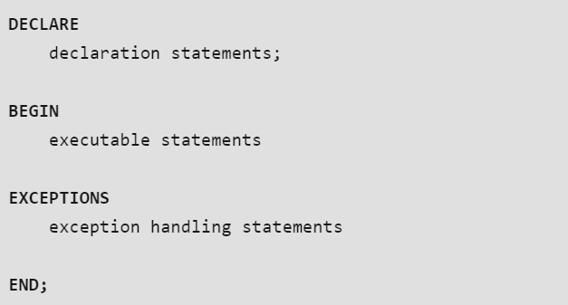
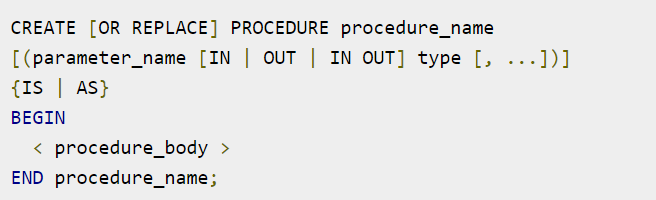
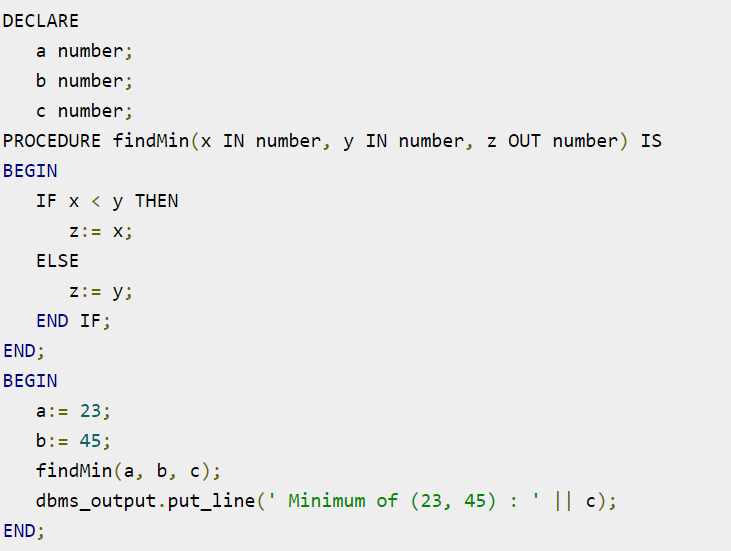
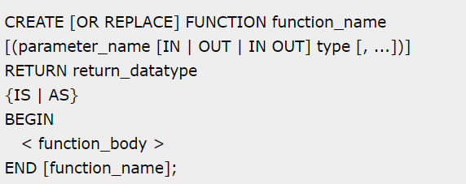
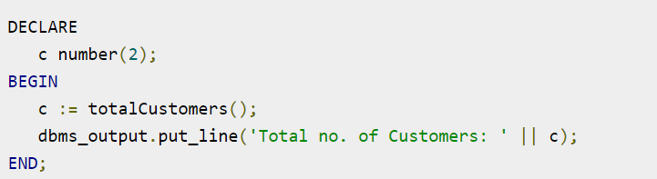
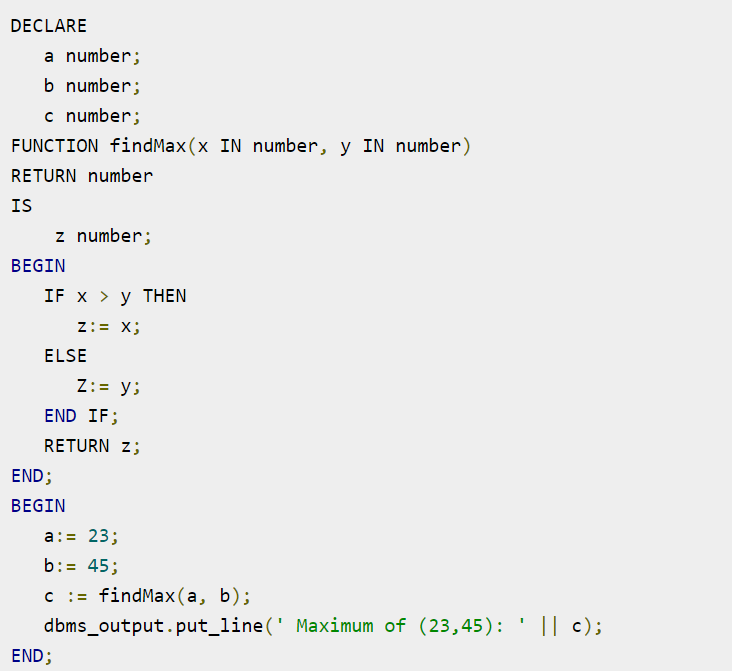
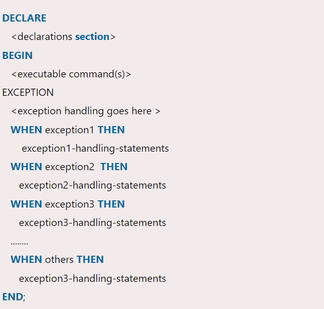
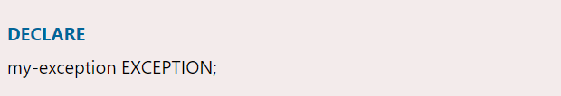
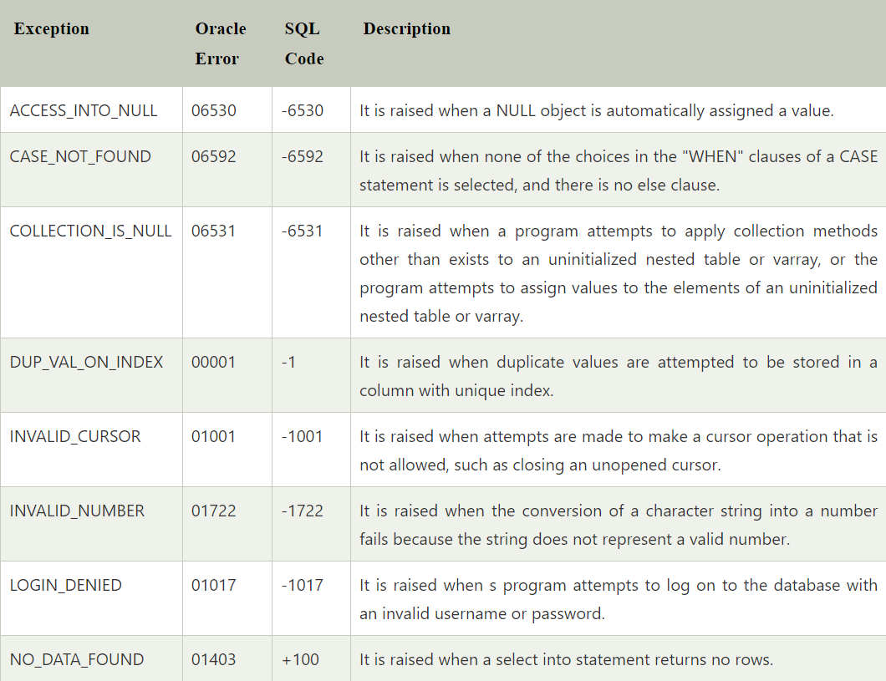

PL/SQL Introduction
PL/SQL is a block structured language that enables developers to combine the power of SQL with procedural statements.All the statements of a block are passed to oracle engine all at once which increases processing speed and decreases the traffic.
Basics of PL/SQL
PL/SQL stands for Procedural Language extensions to the Structured Query Language (SQL).
PL/SQL is a combination of SQL along with the procedural features of programming languages.
Oracle uses a PL/SQL engine to processes the PL/SQL statements.
PL/SQL includes procedural language elements like conditions and loops. It allows declaration of constants and variables, procedures and functions, types and variable of those types and triggers.
Disadvantages of SQL:
SQL doesn’t provide the programmers with a technique of condition checking, looping and branching.
SQL statements are passed to Oracle engine one at a time which increases traffic and decreases speed.
SQL has no facility of error checking during manipulation of data.
Features of PL/SQL:
PL/SQL is basically a procedural language, which provides the functionality of decision making, iteration and many more features of procedural programming languages.
PL/SQL can execute a number of queries in one block using single command.
One can create a PL/SQL unit such as procedures, functions, packages, triggers, and types, which are stored in the database for reuse by applications.
PL/SQL provides a feature to handle the exception which occurs in PL/SQL block known as exception handling block.
Applications written in PL/SQL are portable to computer hardware or operating system where Oracle is operational.
PL/SQL Offers extensive error checking.
Structure of PL/SQL
PL/SQL extends SQL by adding constructs found in procedural languages, resulting in a structural language that is more powerful than SQL. The basic unit in PL/SQL is a block. All PL/SQL programs are made up of blocks, which can be nested within each other.

Declare section starts with DECLARE keyword in which variables, constants, records as cursors can be declared which stores data temporarily. It basically consists definition of PL/SQL identifiers. This part of the code is optional.
Execution section starts with BEGIN and ends with END keyword.This is a mandatory section and here the program logic is written to perform any task like loops and conditional statements. It supports all DML commands, DDL commands and SQL*PLUS built-in functions as well.
Exception section starts with EXCEPTION keyword.This section is optional which contains statements that are executed when a run-time error occurs. Any exceptions can be handled in this section.
Procedures in PL/SQL
PL/SQL is a block-structured language that enables developers to combine the power of SQL with procedural statements.
A stored procedure in PL/SQL is nothing but a series of declarative SQL statements which can be stored in the database catalogue. A procedure can be thought of as a function or a method. They can be invoked through triggers, other procedures, or applications on Java, PHP etc.
All the statements of a block are passed to Oracle engine all at once which increases processing speed and decreases the traffic.

Example

Creating a function
A standalone function is created using the CREATE FUNCTION statement. The simplified syntax for the CREATE OR REPLACE PROCEDURE statement is as follows −

Calling a function
While creating a function, you give a definition of what the function has to do. To use a function, you will have to call that function to perform the defined task. When a program calls a function, the program control is transferred to the called function.
A called function performs the defined task and when its return statement is executed or when the last end statement is reached, it returns the program control back to the main program.
To call a function, you simply need to pass the required parameters along with the function name and if the function returns a value, then you can store the returned value. Following program calls the function totalCustomers from an anonymous block −

Example

Syntax for Exception Handling

User Defined Exceptions
PL/SQL facilitates their users to define their own exceptions according to the need of the program. A user-defined exception can be raised explicitly, using either a RAISE statement or the procedure DBMS_STANDARD.RAISE_APPLICATION_ERROR.

Pre Defined Exception
There are many pre-defined exception in PL/SQL which are executed when any database rule is violated by the programs.
For example: NO_DATA_FOUND is a pre-defined exception which is raised when a SELECT INTO statement returns no rows.
Following is a list of some important pre-defined exceptions:
